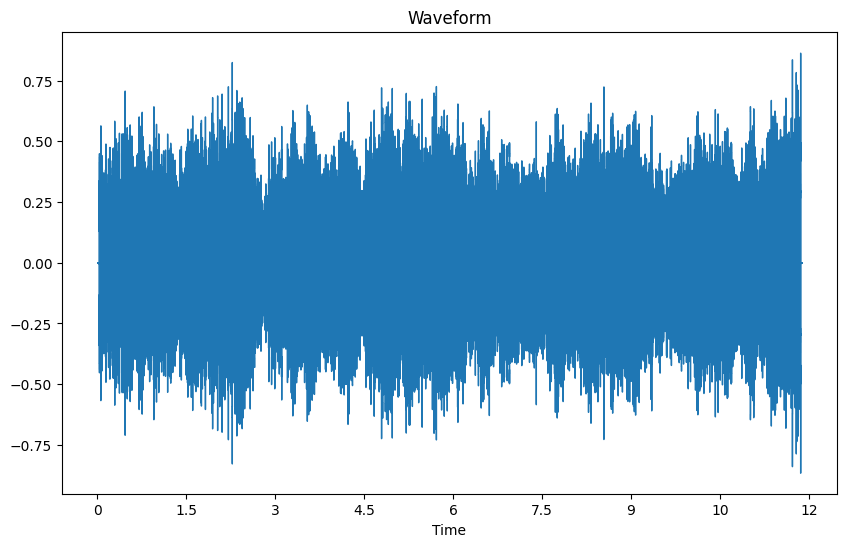
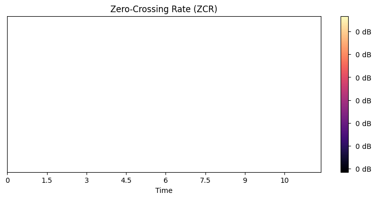

Klasifikasi Audio Menggunakan Standart Deviasi, Skewness dan Kurtosis#
Nama : Qoid Rif’at
NIM : 210411100160
Kelas : Proyek Sains Data (A)
pip install librosa
Requirement already satisfied: librosa in /usr/local/lib/python3.10/dist-packages (0.10.1)
Requirement already satisfied: audioread>=2.1.9 in /usr/local/lib/python3.10/dist-packages (from librosa) (3.0.1)
Requirement already satisfied: numpy!=1.22.0,!=1.22.1,!=1.22.2,>=1.20.3 in /usr/local/lib/python3.10/dist-packages (from librosa) (1.23.5)
Requirement already satisfied: scipy>=1.2.0 in /usr/local/lib/python3.10/dist-packages (from librosa) (1.11.3)
Requirement already satisfied: scikit-learn>=0.20.0 in /usr/local/lib/python3.10/dist-packages (from librosa) (1.2.2)
Requirement already satisfied: joblib>=0.14 in /usr/local/lib/python3.10/dist-packages (from librosa) (1.3.2)
Requirement already satisfied: decorator>=4.3.0 in /usr/local/lib/python3.10/dist-packages (from librosa) (4.4.2)
Requirement already satisfied: numba>=0.51.0 in /usr/local/lib/python3.10/dist-packages (from librosa) (0.58.1)
Requirement already satisfied: soundfile>=0.12.1 in /usr/local/lib/python3.10/dist-packages (from librosa) (0.12.1)
Requirement already satisfied: pooch>=1.0 in /usr/local/lib/python3.10/dist-packages (from librosa) (1.8.0)
Requirement already satisfied: soxr>=0.3.2 in /usr/local/lib/python3.10/dist-packages (from librosa) (0.3.7)
Requirement already satisfied: typing-extensions>=4.1.1 in /usr/local/lib/python3.10/dist-packages (from librosa) (4.5.0)
Requirement already satisfied: lazy-loader>=0.1 in /usr/local/lib/python3.10/dist-packages (from librosa) (0.3)
Requirement already satisfied: msgpack>=1.0 in /usr/local/lib/python3.10/dist-packages (from librosa) (1.0.7)
Requirement already satisfied: llvmlite<0.42,>=0.41.0dev0 in /usr/local/lib/python3.10/dist-packages (from numba>=0.51.0->librosa) (0.41.1)
Requirement already satisfied: platformdirs>=2.5.0 in /usr/local/lib/python3.10/dist-packages (from pooch>=1.0->librosa) (4.0.0)
Requirement already satisfied: packaging>=20.0 in /usr/local/lib/python3.10/dist-packages (from pooch>=1.0->librosa) (23.2)
Requirement already satisfied: requests>=2.19.0 in /usr/local/lib/python3.10/dist-packages (from pooch>=1.0->librosa) (2.31.0)
Requirement already satisfied: threadpoolctl>=2.0.0 in /usr/local/lib/python3.10/dist-packages (from scikit-learn>=0.20.0->librosa) (3.2.0)
Requirement already satisfied: cffi>=1.0 in /usr/local/lib/python3.10/dist-packages (from soundfile>=0.12.1->librosa) (1.16.0)
Requirement already satisfied: pycparser in /usr/local/lib/python3.10/dist-packages (from cffi>=1.0->soundfile>=0.12.1->librosa) (2.21)
Requirement already satisfied: charset-normalizer<4,>=2 in /usr/local/lib/python3.10/dist-packages (from requests>=2.19.0->pooch>=1.0->librosa) (3.3.2)
Requirement already satisfied: idna<4,>=2.5 in /usr/local/lib/python3.10/dist-packages (from requests>=2.19.0->pooch>=1.0->librosa) (3.4)
Requirement already satisfied: urllib3<3,>=1.21.1 in /usr/local/lib/python3.10/dist-packages (from requests>=2.19.0->pooch>=1.0->librosa) (2.0.7)
Requirement already satisfied: certifi>=2017.4.17 in /usr/local/lib/python3.10/dist-packages (from requests>=2.19.0->pooch>=1.0->librosa) (2023.7.22)
from google.colab import drive
drive.mount ('/content/drive')
---------------------------------------------------------------------------
KeyboardInterrupt Traceback (most recent call last)
<ipython-input-2-47ccba274b6a> in <cell line: 2>()
1 from google.colab import drive
----> 2 drive.mount ('/content/drive')
/usr/local/lib/python3.10/dist-packages/google/colab/drive.py in mount(mountpoint, force_remount, timeout_ms, readonly)
101 def mount(mountpoint, force_remount=False, timeout_ms=120000, readonly=False):
102 """Mount your Google Drive at the specified mountpoint path."""
--> 103 return _mount(
104 mountpoint,
105 force_remount=force_remount,
/usr/local/lib/python3.10/dist-packages/google/colab/drive.py in _mount(mountpoint, force_remount, timeout_ms, ephemeral, readonly)
130 )
131 if ephemeral:
--> 132 _message.blocking_request(
133 'request_auth', request={'authType': 'dfs_ephemeral'}, timeout_sec=None
134 )
/usr/local/lib/python3.10/dist-packages/google/colab/_message.py in blocking_request(request_type, request, timeout_sec, parent)
174 request_type, request, parent=parent, expect_reply=True
175 )
--> 176 return read_reply_from_input(request_id, timeout_sec)
/usr/local/lib/python3.10/dist-packages/google/colab/_message.py in read_reply_from_input(message_id, timeout_sec)
94 reply = _read_next_input_message()
95 if reply == _NOT_READY or not isinstance(reply, dict):
---> 96 time.sleep(0.025)
97 continue
98 if (
KeyboardInterrupt:
%cd /content/drive/MyDrive/psd a
/content/drive/MyDrive/psd a
import librosa
import librosa.display
import matplotlib.pyplot as plt
import numpy as np
import pandas as pd
import scipy.stats as stats
# Membaca file audio
audio_file = "audio1.wav" # Gantilah dengan lokasi file audio Anda
x, sr = librosa.load(audio_file)
# Membaca file audio
audio_file = "audio2.wav" # Gantilah dengan lokasi file audio Anda
y, sr = librosa.load(audio_file)
# Membaca file audio
audio_file = "audio3.wav" # Gantilah dengan lokasi file audio Anda
z, sr = librosa.load(audio_file)
# Menghitung Zero-Crossing Rate
zcr = librosa.feature.zero_crossing_rate(y)
print(zcr)
print(zcr.shape)
[[0.16259766 0.19580078 0.23339844 0.14013672 0.12646484 0.12353516
0.11767578 0.125 0.13427734 0.13867188 0.13769531 0.140625
0.13427734 0.14306641 0.15380859 0.16650391 0.18115234 0.17773438
0.17431641 0.15966797 0.15185547 0.14892578 0.14306641 0.140625
0.13623047 0.13427734 0.1328125 0.13378906 0.12792969 0.12207031
0.11474609 0.11181641 0.11132812 0.11132812 0.11621094 0.12011719
0.12890625 0.13232422 0.13378906 0.13720703 0.13232422 0.125
0.1328125 0.12939453 0.13964844 0.15625 0.15771484 0.15820312
0.14941406 0.14355469 0.14648438 0.15087891 0.1640625 0.17089844
0.16845703 0.16162109 0.15136719 0.14160156 0.13476562 0.14160156
0.14599609 0.15429688 0.15332031 0.15234375 0.14404297 0.14404297
0.1484375 0.14404297 0.14648438 0.13964844 0.13671875 0.13818359
0.13427734 0.13574219 0.13330078 0.12841797 0.12597656 0.11474609
0.10546875 0.10693359 0.10400391 0.10595703 0.11279297 0.11474609
0.12207031 0.13085938 0.140625 0.14550781 0.14794922 0.15039062
0.14599609 0.14501953 0.14453125 0.14111328 0.13623047 0.13037109
0.12988281 0.13232422 0.13085938 0.13232422 0.13378906 0.12939453
0.12988281 0.1328125 0.13037109 0.13427734 0.13623047 0.13378906
0.12939453 0.12207031 0.11621094 0.10498047 0.10107422 0.09814453
0.10449219 0.12060547 0.12207031 0.12841797 0.13378906 0.12841797
0.13476562 0.13330078 0.12060547 0.11035156 0.10302734 0.10058594
0.10595703 0.11572266 0.12353516 0.12548828 0.13085938 0.12597656
0.12890625 0.12988281 0.12353516 0.12353516 0.11474609 0.11425781
0.12060547 0.125 0.12939453 0.12939453 0.12988281 0.13232422
0.13183594 0.13037109 0.12548828 0.12939453 0.14013672 0.14746094
0.15283203 0.14794922 0.14355469 0.14550781 0.14550781 0.14160156
0.13085938 0.12402344 0.11523438 0.11376953 0.11523438 0.11328125
0.12109375 0.13232422 0.13769531 0.14990234 0.15234375 0.14257812
0.13964844 0.12988281 0.12109375 0.12646484 0.12792969 0.13769531
0.14013672 0.13085938 0.12988281 0.12304688 0.12597656 0.12939453
0.14013672 0.13427734 0.13037109 0.1328125 0.12353516 0.12841797
0.12695312 0.12207031 0.12451172 0.13183594 0.13916016 0.15234375
0.15478516 0.14648438 0.14648438 0.1484375 0.14501953 0.14306641
0.13769531 0.12792969 0.12402344 0.1328125 0.13085938 0.12402344
0.13085938 0.11376953 0.11523438 0.12158203 0.11181641 0.12158203
0.12402344 0.12109375 0.12060547 0.11230469 0.11083984 0.10839844
0.11621094 0.12744141 0.12304688 0.12109375 0.12304688 0.12109375
0.12353516 0.13037109 0.12792969 0.12207031 0.12011719 0.11865234
0.11474609 0.11767578 0.12207031 0.12695312 0.12988281 0.13623047
0.13330078 0.1328125 0.14941406 0.14355469 0.14697266 0.15136719
0.14160156 0.14550781 0.1484375 0.14160156 0.13574219 0.14160156
0.13769531 0.14111328 0.14208984 0.13330078 0.1328125 0.13525391
0.14208984 0.14550781 0.15576172 0.14892578 0.13867188 0.13574219
0.13134766 0.12060547 0.11474609 0.11083984 0.09912109 0.09912109
0.10107422 0.09863281 0.10351562 0.11767578 0.125 0.12695312
0.125 0.11962891 0.11230469 0.11328125 0.11669922 0.12304688
0.12939453 0.1328125 0.1328125 0.12451172 0.12109375 0.12402344
0.12109375 0.13134766 0.12841797 0.125 0.12988281 0.12353516
0.12597656 0.12402344 0.12255859 0.11962891 0.11865234 0.12109375
0.1171875 0.12060547 0.12304688 0.11474609 0.11132812 0.11132812
0.10742188 0.11865234 0.12109375 0.11816406 0.11865234 0.11621094
0.12207031 0.12402344 0.12988281 0.13623047 0.13720703 0.14013672
0.14550781 0.13525391 0.13867188 0.13720703 0.12939453 0.13525391
0.13330078 0.13525391 0.14306641 0.14501953 0.14501953 0.14453125
0.14160156 0.13671875 0.13574219 0.1328125 0.13085938 0.13671875
0.12988281 0.12939453 0.12597656 0.11865234 0.12548828 0.125
0.13330078 0.14013672 0.14306641 0.15332031 0.1484375 0.15136719
0.15625 0.15380859 0.16210938 0.15917969 0.14599609 0.13769531
0.12695312 0.12109375 0.12353516 0.12646484 0.13037109 0.13769531
0.14355469 0.14794922 0.1484375 0.15039062 0.14746094 0.14746094
0.14453125 0.14355469 0.1484375 0.15136719 0.15722656 0.16064453
0.15771484 0.15234375 0.15234375 0.14501953 0.14355469 0.13623047
0.13720703 0.13476562 0.13476562 0.14794922 0.14013672 0.14355469
0.14257812 0.13525391 0.13916016 0.12890625 0.12988281 0.12890625
0.12988281 0.13525391 0.13085938 0.13134766 0.12744141 0.12451172
0.12646484 0.12109375 0.12646484 0.1328125 0.12890625 0.13525391
0.13183594 0.12988281 0.13085938 0.13330078 0.13720703 0.14794922
0.15576172 0.15185547 0.15234375 0.14501953 0.14013672 0.13818359
0.13964844 0.12988281 0.12939453 0.13427734 0.12792969 0.140625
0.14599609 0.14404297 0.14013672 0.13867188 0.12744141 0.14013672
0.14257812 0.13964844 0.14990234 0.13818359 0.13671875 0.13964844
0.13623047 0.12988281 0.12548828 0.12060547 0.12109375 0.12744141
0.12597656 0.12451172 0.11914062 0.11523438 0.12451172 0.12646484
0.12744141 0.12597656 0.12597656 0.12060547 0.11914062 0.12060547
0.10986328 0.109375 0.11132812 0.10888672 0.12207031 0.12792969
0.13134766 0.1328125 0.12841797 0.12304688 0.11767578 0.12060547
0.11621094 0.11328125 0.11523438 0.11425781 0.11865234 0.12255859
0.12548828 0.11914062 0.11230469 0.11035156 0.10302734 0.10009766
0.10107422 0.09863281 0.09863281 0.09912109 0.09716797 0.10253906
0.12011719 0.13183594 0.14111328 0.14453125 0.13769531 0.12890625
0.12402344 0.12060547 0.12011719 0.12158203 0.12060547 0.12255859
0.12304688 0.12890625 0.13427734 0.13818359 0.13525391 0.13671875
0.13964844 0.1328125 0.13574219 0.1328125 0.12988281 0.13623047
0.14208984 0.14501953 0.15332031 0.14941406 0.14453125 0.14697266
0.140625 0.14160156 0.14160156 0.140625 0.14160156 0.19189453
0.18066406 0.14306641]]
(1, 512)
# Menampilkan grafik ZCR
plt.figure(figsize=(10, 6))
librosa.display.waveshow(y, sr=sr)
plt.title("Waveform")
plt.figure(figsize=(10, 4))
librosa.display.specshow(zcr, sr=sr, x_axis="time")
plt.colorbar(format="%2.0f dB")
plt.title("Zero-Crossing Rate (ZCR)")
plt.show()


import numpy as np
import librosa
audio_file = "audio1.wav"
signal, sample_rate = librosa.load(audio_file)
zero_crossings = librosa.feature.zero_crossing_rate(signal)
mean_zero_crossings = np.mean(zero_crossings)
median_zero_crossings = np.median(zero_crossings)
std_zero_crossings = np.std(zero_crossings)
skewness_zcr = stats.skew(zero_crossings, axis=None)
kurtosis_zcr = stats.kurtosis(zero_crossings, axis=None)
print(f"Mean Zero-Crossing Rate: {mean_zero_crossings}")
print(f"Median Zero-Crossing Rate: {median_zero_crossings}")
print(f"Standard Deviation of Zero-Crossing Rate: {std_zero_crossings}")
print(f"Skewness Zero-Crossing Rate: {skewness_zcr}")
print(f"Kurtosis Zero-Crossing Rate: {kurtosis_zcr}")
Mean Zero-Crossing Rate: 0.022295977618243243
Median Zero-Crossing Rate: 0.01171875
Standard Deviation of Zero-Crossing Rate: 0.02245789951982053
Skewness Zero-Crossing Rate: 1.534646039803422
Kurtosis Zero-Crossing Rate: 0.8205739192008354
import numpy as np
import librosa
audio_file = "audio2.wav"
signal, sample_rate = librosa.load(audio_file)
zero_crossings = librosa.feature.zero_crossing_rate(signal)
mean_zero_crossings = np.mean(zero_crossings)
median_zero_crossings = np.median(zero_crossings)
std_zero_crossings = np.std(zero_crossings)
skewness_zcr = stats.skew(zero_crossings, axis=None)
kurtosis_zcr = stats.kurtosis(zero_crossings, axis=None)
print(f"Mean Zero-Crossing Rate: {mean_zero_crossings}")
print(f"Median Zero-Crossing Rate: {median_zero_crossings}")
print(f"Standard Deviation of Zero-Crossing Rate: {std_zero_crossings}")
print(f"Skewness Zero-Crossing Rate: {skewness_zcr}")
print(f"Kurtosis Zero-Crossing Rate: {kurtosis_zcr}")
Mean Zero-Crossing Rate: 0.13221263885498047
Median Zero-Crossing Rate: 0.13134765625
Standard Deviation of Zero-Crossing Rate: 0.01527410522315829
Skewness Zero-Crossing Rate: 0.8751086541589257
Kurtosis Zero-Crossing Rate: 4.273626441238802
import numpy as np
import librosa
audio_file = "audio3.wav"
signal, sample_rate = librosa.load(audio_file)
zero_crossings = librosa.feature.zero_crossing_rate(signal)
mean_zero_crossings = np.mean(zero_crossings)
median_zero_crossings = np.median(zero_crossings)
std_zero_crossings = np.std(zero_crossings)
skewness_zcr = stats.skew(zero_crossings, axis=None)
kurtosis_zcr = stats.kurtosis(zero_crossings, axis=None)
print(f"Mean Zero-Crossing Rate: {mean_zero_crossings}")
print(f"Median Zero-Crossing Rate: {median_zero_crossings}")
print(f"Standard Deviation of Zero-Crossing Rate: {std_zero_crossings}")
print(f"Skewness Zero-Crossing Rate: {skewness_zcr}")
print(f"Kurtosis Zero-Crossing Rate: {kurtosis_zcr}")
Mean Zero-Crossing Rate: 0.133019047289823
Median Zero-Crossing Rate: 0.0654296875
Standard Deviation of Zero-Crossing Rate: 0.19731362360864052
Skewness Zero-Crossing Rate: 2.6327599997082234
Kurtosis Zero-Crossing Rate: 5.455838547895601
data = {'audio1': {'mean':'0.022295977618243243', 'median':'0.01171875', 'std deviasi':'0.02245789951982053', 'skewness':'1.534646039803422', 'kurtosis':'0.8205739192008354', 'label':'Tertawa'},
'audio2': {'mean':'0.13221263885498047', 'median':'0.13134765625', 'std deviasi':'0.01527410522315829', 'skewness':'0.8751086541589257', 'kurtosis':'4.273626441238802', 'label':'Marah'},
'audio3': {'mean':'0.3228678385416667', 'median':'0.147216796875', 'std deviasi':'0.28132463618706527', 'skewness':'2.6327599997082234', 'kurtosis':'5.455838547895601', 'label':'Marah'}}
df = pd.DataFrame(data)
display(df)
| audio1 | audio2 | audio3 | |
|---|---|---|---|
| mean | 0.022295977618243243 | 0.13221263885498047 | 0.3228678385416667 |
| median | 0.01171875 | 0.13134765625 | 0.147216796875 |
| std deviasi | 0.02245789951982053 | 0.01527410522315829 | 0.28132463618706527 |
| skewness | 1.534646039803422 | 0.8751086541589257 | 2.6327599997082234 |
| kurtosis | 0.8205739192008354 | 4.273626441238802 | 5.455838547895601 |
| label | Tertawa | Marah | Marah |
# Menyimpan DataFrame ke dalam file CSV
df.to_csv('zero-crosing-rate.csv', index=False)